1. Introduction to Communication
Communication is the process of exchanging information between two or more parties. In computer networking, communication occurs when network devices exchange information with one another.
Communication happens everywhere in our daily lives. When you send a message, make a phone call, send an email, or share a photograph, information is being transferred from one place to another.
Computer networks use the same basic idea. Instead of people communicating directly, computers, phones, printers, servers, switches, routers, and other network devices communicate with one another.
The Basic Components of Communication
Communication in a network can be understood by identifying several important components.
- Sender: The device that starts the communication.
- Receiver: The device that receives the information.
- Message: The information being exchanged.
- Communication medium: The path through which the information travels.
- Protocols: The rules that devices follow when communicating.
A network connection alone does not automatically mean that communication will be successful. Devices need addressing, compatible configurations, communication protocols, and a suitable path through the network.
Communication in a Simple Network
Consider two computers connected through a switch.
Source Network Device Destination
If PC0 wants to communicate with PC1, information must travel from PC0 through the network and eventually reach PC1.
As we continue through this module, we will investigate what happens during this process. We will examine IP addresses, packets, protocols, Internet Control Message Protocol (ICMP), Media Access Control (MAC) addresses, Address Resolution Protocol (ARP), Ethernet frames, and switching.
2. Communication in Networks
A computer network allows multiple devices to communicate and share information and resources.
Devices may communicate within the same local network or across multiple networks. For example, two computers in the same computer laboratory may communicate through a switch, while a computer accessing a website may communicate with servers located on another network.
Local Communication
Devices connected to the same local network can communicate directly through the local network infrastructure.
Ethernet networks commonly use switches to connect devices within the local network.
Communication Between Different Networks
When the destination exists on another network, a router is normally required to move traffic between the networks.
PC0 ─── Switch ─── Router
Router
Network B
Router ─── Switch ─── Server
This distinction is important. A switch primarily connects devices within a local network, while a router connects different networks and determines where IP packets should be forwarded.
Communication Requires Identification
Before information can be delivered, networking devices need ways to identify sources and destinations.
At the network layer, Internet Protocol (IP) addresses provide logical addressing. At the data link layer, Ethernet uses Media Access Control (MAC) addresses to identify network interfaces on a local network.
We will study these addressing systems in greater detail later in this module.
3. Network Devices
Network communication depends on different types of devices. Each device has a particular role in the network.
End Devices
End devices are devices that generate or receive network information.
Examples include:
- Desktop computers
- Laptops
- Smartphones
- Network printers
- Servers
- IP phones
Network Switch
A switch connects multiple devices within a local network. Ethernet switches use MAC addresses to determine where Ethernet frames should be forwarded.
When a frame enters a switch, the switch can examine the source MAC address and learn which port is associated with that address.
We will examine this process more deeply in the MAC address and switching sections.
Router
A router connects different networks. Routers operate primarily at the network layer and use IP addressing to make forwarding decisions.
For example, your home router can connect your local home network to your Internet Service Provider's network.
Wireless Access Point
A wireless access point provides wireless network connectivity to devices such as laptops and smartphones.
Instead of using a physical Ethernet cable between the client device and the access point, communication occurs using wireless radio signals.
Different networking devices perform different jobs. Understanding the role of each device makes it easier to understand how information moves through a network.
4. How Data Travels
When an application sends information across a network, the information does not simply move directly from one computer to another as one large object.
The data is processed and prepared for transmission. Networking protocols add information that allows the receiving devices to understand how the data should be handled.
Example
Imagine PC0 wants to send information to PC1.
↓
Network Interface
↓
Switch
↓
Network Interface
↓
PC1
PC0 prepares the information for transmission. The network interface sends the resulting Ethernet frame onto the network. The switch receives the frame and makes a forwarding decision. PC1 eventually receives the frame and processes the information contained within it.
Encapsulation
One of the fundamental ideas in networking is encapsulation. As data moves down through the networking layers, additional information is added to help deliver and process the data.
This allows different networking layers to perform different responsibilities without every layer needing to understand everything about the application data.
We will examine encapsulation in more detail when we discuss packets, frames, and networking models.
5. Packets and Frames
The terms packet and frame are often used when discussing network communication, but they do not refer to exactly the same thing.
Packet
A packet is a unit of data associated with the network layer. In an IPv4 network, an IP packet contains information such as the source IP address and destination IP address.
Destination IP: 192.168.1.20
Data: Information being transmitted
Frame
A frame is associated with the data link layer. Ethernet frames contain information used for communication across a local Ethernet network.
Ethernet frames use source and destination MAC addresses.
Why Do We Need Both?
IP addressing and MAC addressing perform different roles. An IP address provides logical addressing, while a MAC address is used for local Ethernet delivery.
This separation allows networks to operate efficiently even when information travels through multiple network technologies and networks.
IP addresses help identify the logical destination of communication, while MAC addresses are used for local Ethernet delivery.
6. IP Addresses
An Internet Protocol (IP) address is a logical address assigned to a network interface.
IP addresses allow devices to identify network destinations and communicate across interconnected networks.
IPv4
Internet Protocol version 4 (IPv4) uses 32-bit addresses. These addresses are normally written as four decimal octets.
Each octet represents eight bits, giving a total of 32 bits.
Example Network
PC1: 192.168.1.20
Subnet Mask: 255.255.255.0
In this example, both devices belong to the same IPv4 network, assuming the subnet mask is configured as shown.
IP addressing becomes especially important when we begin studying communication between different networks and routing.
An IP address is not the same thing as a MAC address. They operate at different networking layers and serve different purposes.
7. Network Protocols
A protocol is a set of rules that defines how devices communicate.
Without protocols, devices from different manufacturers and different operating systems would have difficulty communicating reliably.
Important Protocols
- Internet Protocol (IP): Provides logical addressing and helps deliver packets between networks.
- Transmission Control Protocol (TCP): Provides reliable, connection-oriented transport of data.
- User Datagram Protocol (UDP): Provides connectionless transport with lower overhead.
- Internet Control Message Protocol (ICMP): Used for network control, error reporting, and diagnostic functions.
- Address Resolution Protocol (ARP): Helps IPv4 devices discover the MAC address associated with an IPv4 address on a local network.
- Dynamic Host Configuration Protocol (DHCP): Automatically provides network configuration information such as IP addresses to clients.
- Domain Name System (DNS): Translates domain names into IP addresses and performs other name resolution functions.
Different protocols solve different problems. Together they allow complex network communication to occur.
8. Internet Control Message Protocol and Ping
Internet Control Message Protocol (ICMP) is a network layer protocol used for control, diagnostic, and error-reporting messages.
What is Ping?
The ping command is commonly used to test whether one device can reach another device across an IP network.
Ping normally uses an ICMP Echo Request message. If the destination is reachable and configured to respond, it sends an ICMP Echo Reply.
↓
ICMP Echo Request
↓
PC1
↓
ICMP Echo Reply
↓
PC0
Why Do We Use Ping?
Ping is useful for basic connectivity testing. If a ping is successful, it provides evidence that the destination can be reached and that the relevant network path is functioning.
However, a failed ping does not automatically mean that the physical network is broken. Firewalls, configuration problems, routing problems, or disabled ICMP responses can also cause ping failures.
We will use ping to demonstrate communication between PC0 and PC1 and observe the network configuration that makes the communication possible.
9. Packet Tracer Exercise 1: Basic Communication
In this exercise, we create a simple network and test communication between two computers.
The purpose of the exercise is not simply to make the ping command work. It is to connect the theory we have studied with an actual network simulation.
Step 1: Network Topology
The first screenshot shows the topology used in the exercise. PC0 and PC1 are connected through a switch.
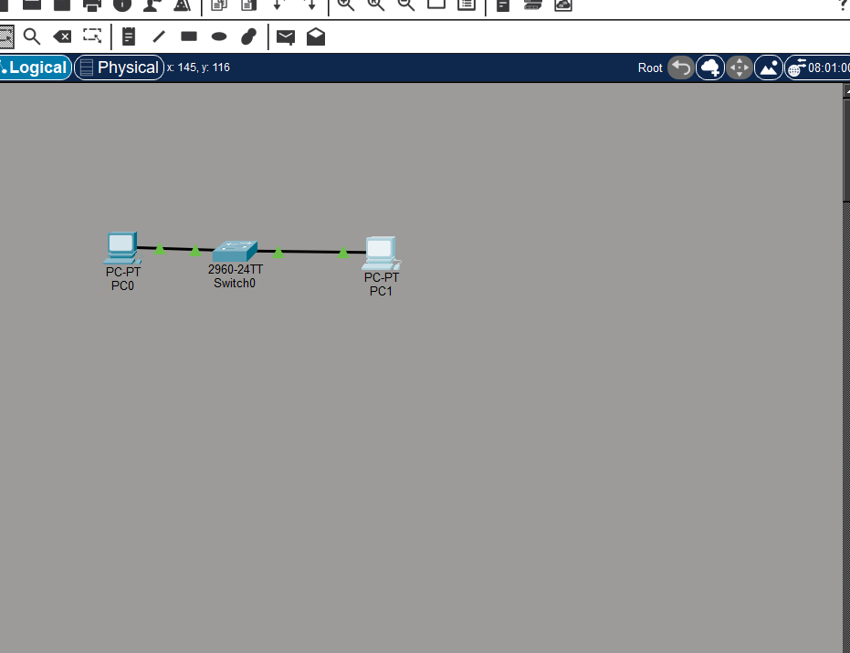
Exercise 1: Network topology
Step 2: IP Configuration
Each PC needs an IP address so that it can participate in IPv4 communication.
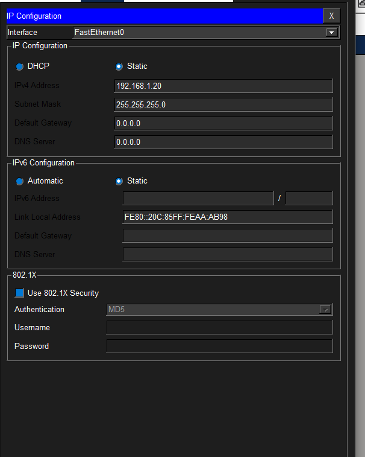
Exercise 1: IP configuration
The IP addresses provide logical identities for the devices within the network.
Step 3: Testing from PC0
We then use the ping command from PC0 to test whether PC1 can be reached.
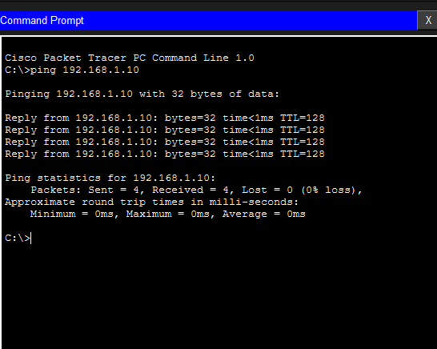
Exercise 1: PC0 successfully testing communication
Step 4: Testing from PC1
We also test communication in the opposite direction by sending a ping from PC1 to PC0.
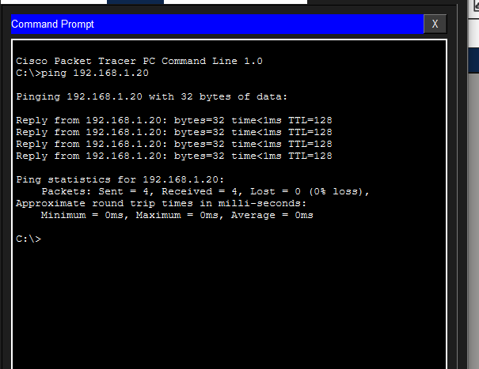
Exercise 1: PC1 testing communication with PC0
We demonstrated that two devices can communicate when they have appropriate network configurations and a working connection through the network.
We also used Internet Control Message Protocol (ICMP) through the ping command to test connectivity.
10. MAC Addresses
A Media Access Control (MAC) address is an address associated with a network interface and is used at the data link layer for local network communication.
Ethernet networks use MAC addresses when delivering frames across a local network.
MAC Address Example
MAC addresses are normally represented using hexadecimal notation. A traditional Ethernet MAC address is 48 bits long.
IP Address vs MAC Address
192.168.1.10
Logical address used by IP
MAC Address
00E0.8F12.3456
Link-layer address used by Ethernet
These addresses work together but perform different functions. The IP address helps identify the logical destination, while the MAC address is used for local Ethernet delivery.
In the next sections we will examine how a device can discover another device's MAC address and how a switch uses MAC addresses to forward frames.
11. Address Resolution Protocol
Address Resolution Protocol (ARP) is used by IPv4 devices to discover the MAC address associated with a known IPv4 address on the local network.
Why is ARP Needed?
Suppose PC0 knows that PC1 has the IPv4 address 192.168.1.20.
PC0 still needs to know which MAC address should be used for the Ethernet frame that will deliver the information across the local network.
PC0 can use ARP to ask:
The device that owns that IPv4 address can respond with its MAC address.
ARP Request
An ARP Request is broadcast on the local network because the sender does not initially know which device owns the requested IPv4 address.
ARP Reply
The device that owns the requested IPv4 address sends an ARP Reply containing its MAC address.
|
| ARP Request
↓
Switch
↓
PC1
PC1 sends ARP Reply containing its MAC address
Once the information has been learned, the device can use the MAC address when constructing Ethernet frames for local communication.
ARP does not replace IP addressing. ARP connects an IPv4 address to a MAC address for local network communication.
12. Switching and MAC Address Tables
A switch uses a MAC address table to help determine where Ethernet frames should be forwarded.
What is a MAC Address Table?
A MAC address table contains information about MAC addresses that the switch has learned and the ports through which those devices can be reached.
00AA.1111.2222 Fa0/1
00BB.3333.4444 Fa0/2
How Does a Switch Learn?
When an Ethernet frame arrives at a switch, the switch examines the source MAC address.
The switch can associate that source MAC address with the port where the frame arrived.
Over time, the switch builds a table containing learned MAC addresses and their associated ports.
What Happens When the Destination is Known?
If the switch already knows the destination MAC address, it can forward the frame through the appropriate port.
What Happens When the Destination is Unknown?
If the switch does not yet know which port contains the destination MAC address, it can flood the frame out of the appropriate ports within the local network, except the port on which the frame arrived.
When the destination responds, the switch can learn the destination's source MAC address from the returning frame.
Switches use MAC address learning to make Ethernet communication more efficient. Instead of forwarding every known unicast frame everywhere, the switch can use its MAC address table to send the frame toward the correct port.
13. Packet Tracer Exercise 2: MAC Addresses and Switching
This exercise takes our first communication exercise a step further.
Instead of only asking whether PC0 and PC1 can communicate, we investigate what happens inside the local Ethernet network.
We will look at MAC addresses, the switch's MAC address table, the frame at the switch, and the successful communication process.
Step 1: Find PC0's MAC Address
First, we identify the MAC address associated with PC0's network interface.
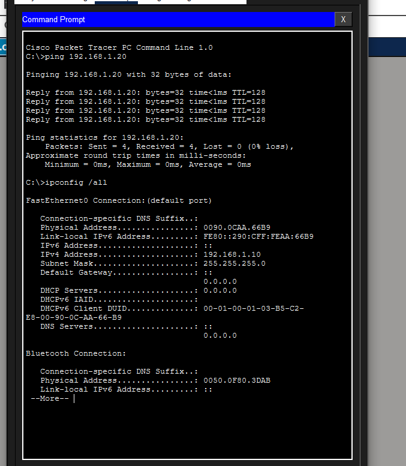
Exercise 2: PC0 MAC address
Step 2: Find PC1's MAC Address
We then identify the MAC address associated with PC1.
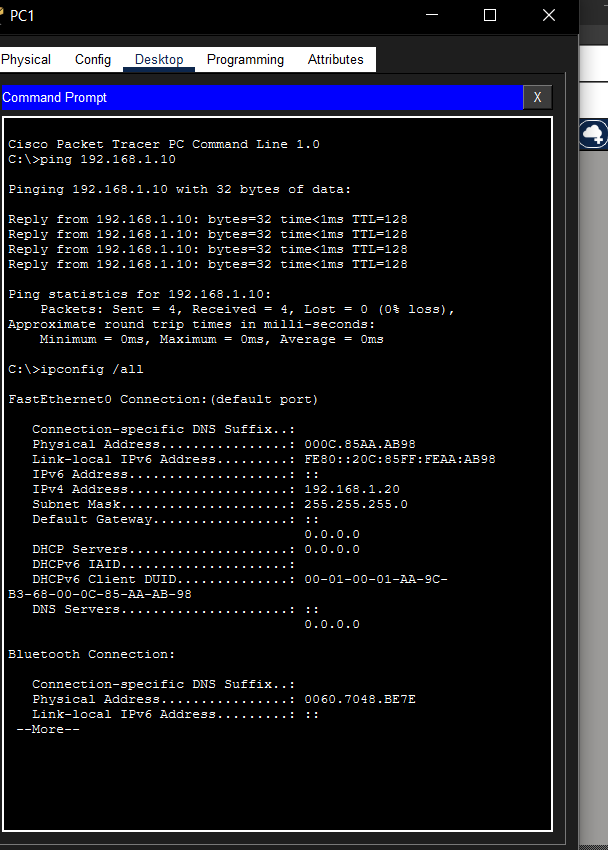
Exercise 2: PC1 MAC address
Step 3: Examine the MAC Address Table Before the Ping
Before communication takes place, we inspect the switch's MAC address table.
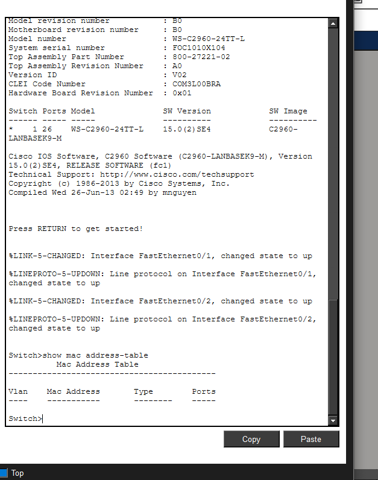
Exercise 2: MAC address table before communication
This allows us to see what information the switch has already learned.
Step 4: Observe the Packet at the Switch
We then initiate communication and observe the packet or frame as it reaches the switch.
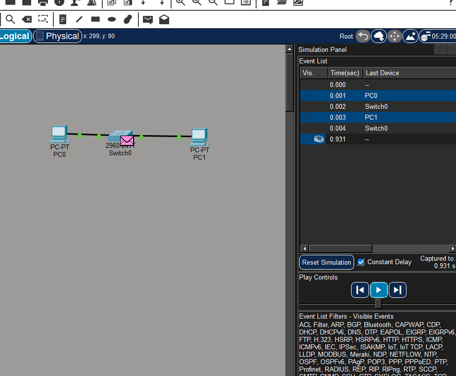
Exercise 2: Communication observed at the switch
The switch receives the Ethernet frame and examines the information contained within it.
Step 5: Packet Reaches PC1
The frame is eventually forwarded toward PC1.
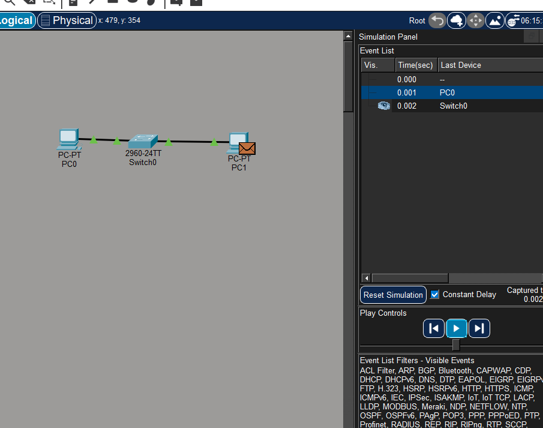
Exercise 2: Packet reaches PC1
Step 6: Examine the MAC Address Table After Communication
After communication has taken place, we inspect the MAC address table again.
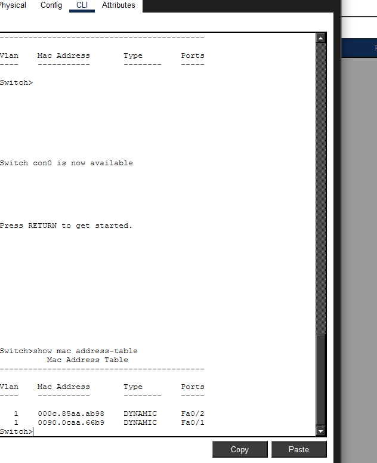
Exercise 2: MAC address table after communication
The switch may now have learned additional MAC address information from the frames that travelled through it.
Step 7: Confirm Successful Simulation
Finally, we verify that the communication completed successfully in Packet Tracer's Simulation Mode.
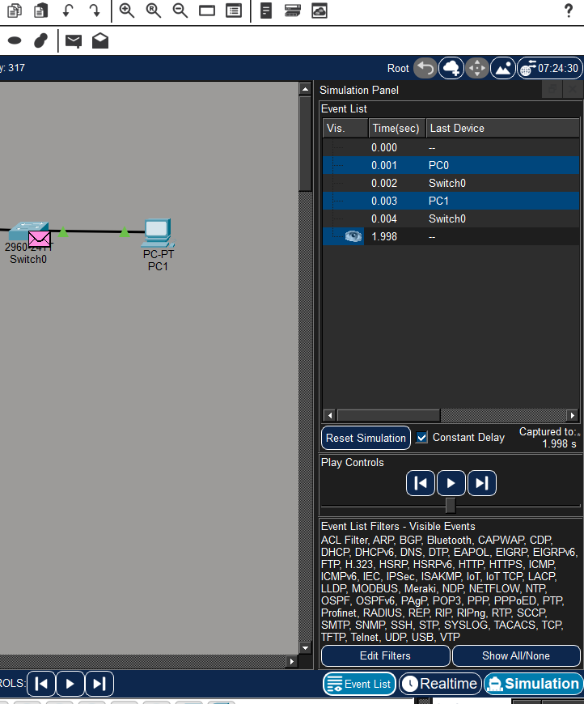
Exercise 2: Successful communication in Simulation Mode
The second exercise demonstrates that successful network communication involves more than simply knowing the destination IP address.
Local Ethernet communication also involves MAC addresses, ARP, Ethernet frames, and switch MAC address learning.
We will study these concepts in much greater depth in the next networking sections.
14. Real Networking Devices — Visual Reference
Computer networks are not only simulations. The same concepts demonstrated in Packet Tracer are implemented using physical networking equipment in homes, schools, offices, data centers, and other environments.
This section provides visual references for the physical devices that correspond to the devices we have been using in Packet Tracer.
The images below are real-world visual references. They are not photographs of equipment personally owned or operated during this project. The practical network exercises in this module are performed using Cisco Packet Tracer.
Real Network Devices

PC / Laptop
A computer is an end device that can send and receive network data.
In Packet Tracer, PCs such as PC0 and PC1 represent computers connected to the network.

Ethernet Switch
A switch connects multiple devices within a local network.
It uses MAC address information to determine where Ethernet frames should be forwarded.

Router
A router connects different networks and forwards IP packets toward their destinations.
Routers are commonly used to connect local networks to other networks, including the Internet.

Wireless Access Point
A wireless access point allows wireless devices such as laptops and smartphones to connect to a network.
It provides a connection between wireless clients and the wired network.

Ethernet Cable
Ethernet cables provide a physical communication medium for wired networks.
They are commonly used to connect computers, switches, routers, and other network devices.
How the Physical Devices Work Together
A typical wired network may contain end devices connected to switches, with routers providing communication between different networks.
Laptop / PC
↓
Ethernet Cable
↓
Ethernet Switch
↓
Router
↓
Other Network / Internet
Wireless Example
↘ ↙
Wireless Access Point
↓
Ethernet Switch
↓
Router
↓
Internet
Packet Tracer vs Real Network
Packet Tracer allows us to simulate the behavior of physical networking equipment without requiring access to the actual hardware.
| Packet Tracer | Real Network |
|---|---|
| PC-PT | Physical computer or laptop |
| 2960 switch | Physical Ethernet switch |
| Router | Physical network router |
| Wireless device | Physical wireless access point |
| Copper straight-through cable | Physical Ethernet cable |
| Simulation Mode | Actual network traffic |
The devices we configure in Packet Tracer represent the same basic networking concepts found in physical networks. The main difference is that Packet Tracer provides a simulated environment where we can safely observe and experiment with network communication.
Device Roles at a Glance
- PC/Laptop: Generates and receives network data.
- Switch: Connects devices within a local network and forwards Ethernet frames.
- Router: Connects different IP networks and forwards packets.
- Wireless Access Point: Provides wireless connectivity to network clients.
- Ethernet Cable: Provides a physical medium for wired communication.
Visual reference images are from publicly available Wikimedia Commons resources. Device roles are consistent with standard networking descriptions from Cisco documentation.
Module 1 Summary
Communication is the foundation of computer networking. Devices communicate by exchanging information through wired or wireless communication media while following standardized protocols.
We introduced network devices such as end devices, switches, routers, and wireless access points.
We learned that IP addresses provide logical addressing and that Ethernet uses MAC addresses for local delivery.
We introduced packets and Ethernet frames and discussed how information moves through a network.
We also introduced important protocols including Internet Protocol (IP), Internet Control Message Protocol (ICMP), and Address Resolution Protocol (ARP).
Finally, we used Cisco Packet Tracer to demonstrate basic communication and then examined MAC addresses, switching, and MAC address learning.
We also connected the simulated devices to their real-world physical counterparts, including computers, switches, routers, wireless access points, and Ethernet cables.
A device needs a way to identify its destination, a way to transmit information, and a set of protocols that define how communication should occur.
As we continue studying networking, we will move from this general understanding into the detailed mechanisms that make communication possible.